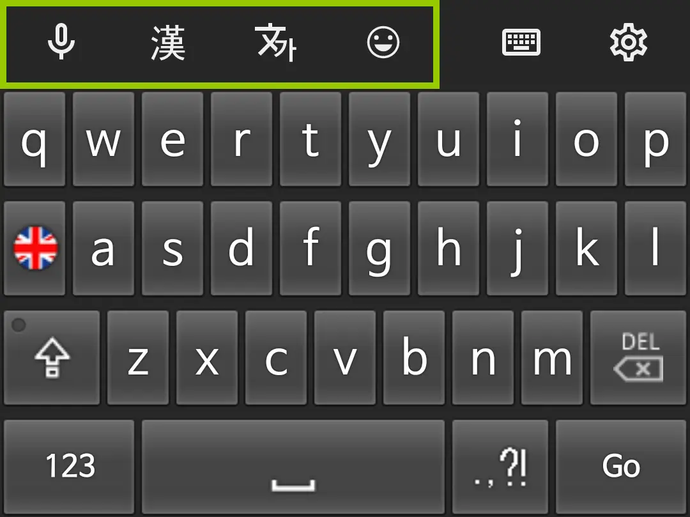
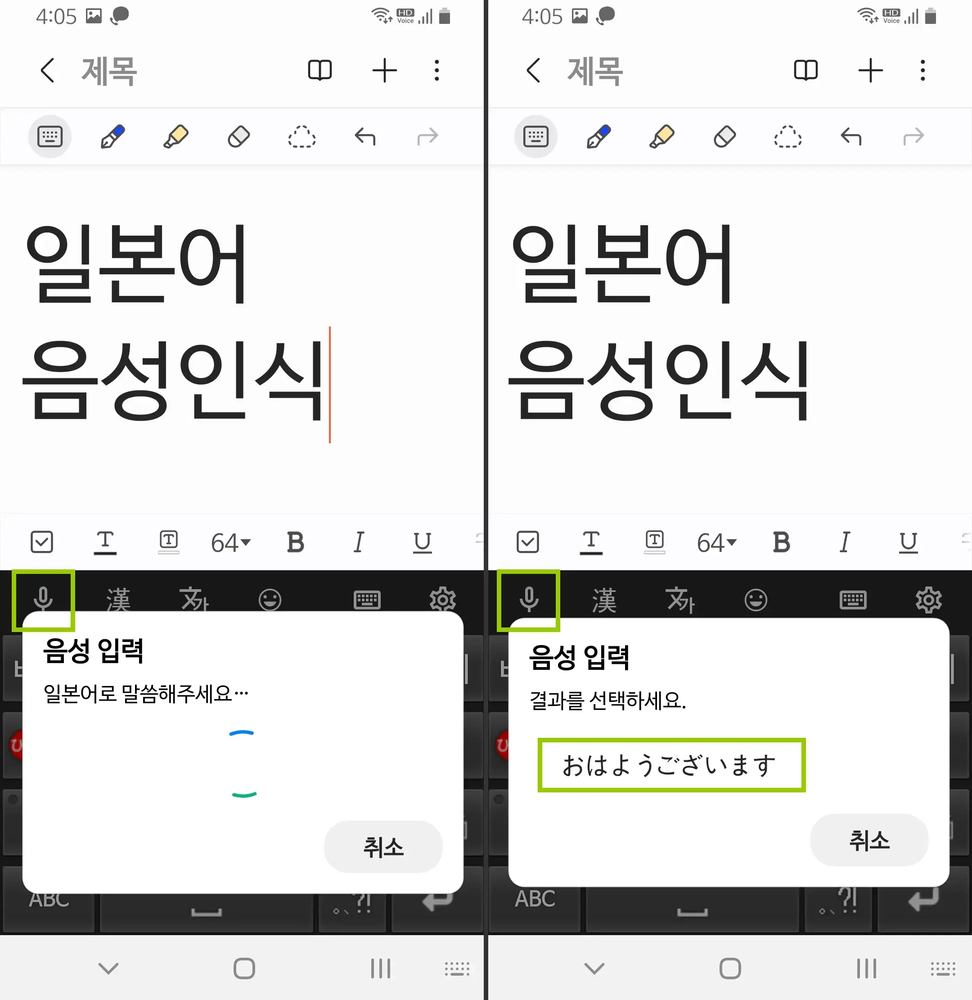
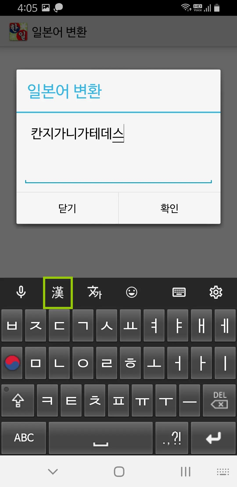
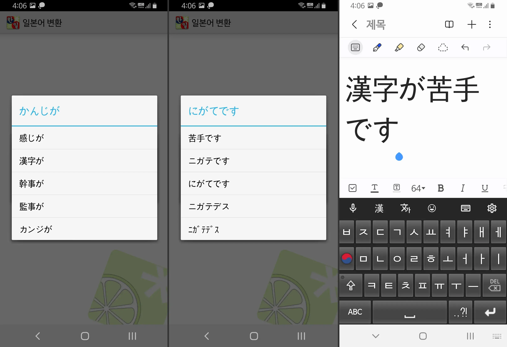
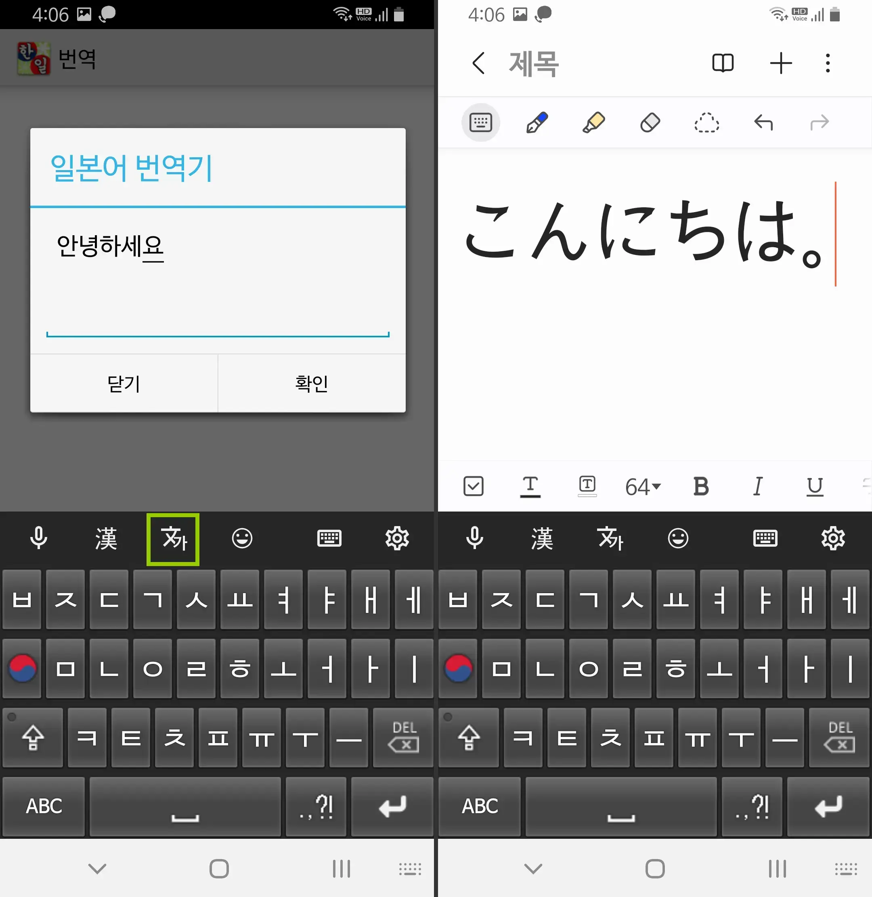
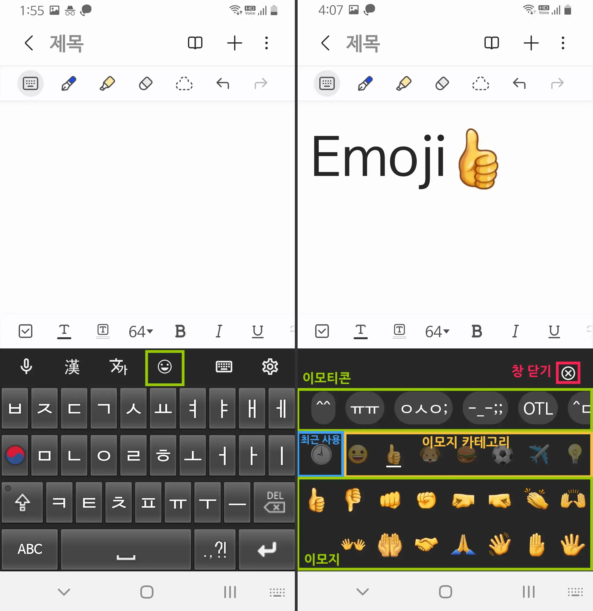
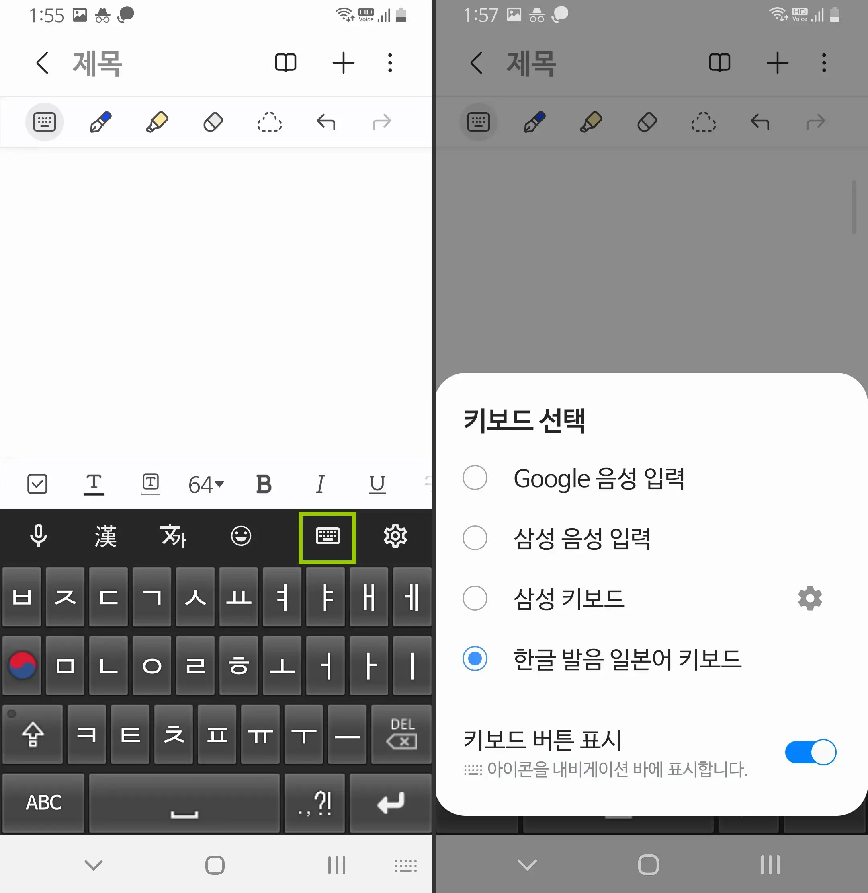
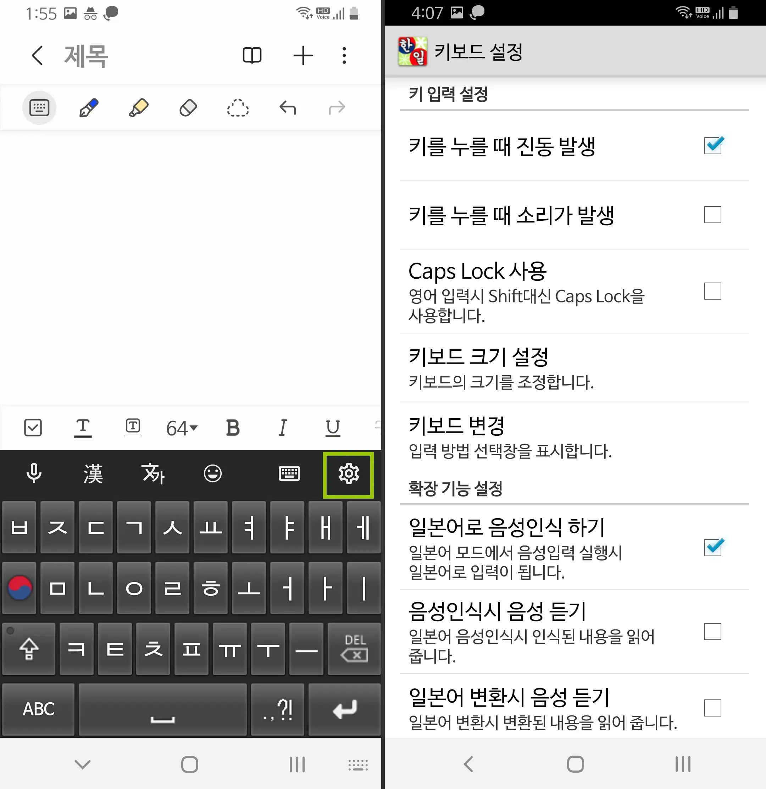

확장 기능을 이용해 더 편리하게 입력이 가능합니다.

키보드 위 툴바에 확장 기능들이 있습니다.
음성 입력

음성 입력 가능
키보드 설정에서 ‘일본어로 음성인식 하기’를 체크(기본 체크)하면,
일본어 입력 모드에서 음성인식을 실행할 때 일본어로 음성 입력 가능.
한글 입력 모드에서는 한국어로 음성 입력이 가능합니다.
일본어 변환

한글 발음 또는 일본어로 긴 문장 입력이 가능합니다.

한자 변환과 예상 단어를 사용하여 입력합니다.
일본어 번역기

번역기 기능으로 더 쉽게 일본어 입력이 가능합니다.
이모티콘, 이모지

간편하게 이모티콘, 이모지 삽입 가능
키보드 설정에 이모티콘 관련 항목이 있습니다.
*이모티콘 학습*: 자주 쓰는 항목이 위로
*이모티콘 초기화*: 기록/편집 내역 초기화
*이모티콘 편집*: 추가/수정/삭제
이모티콘이 아니라 자주 사용하시는 문장을 등록해 입력 가능합니다.
입력 방법 선택 / 키보드 설정

다른 키보드로 쉽게 변경 가능합니다.

한글 발음 일본어 키보드의 설정을 변경할 수 있습니바.